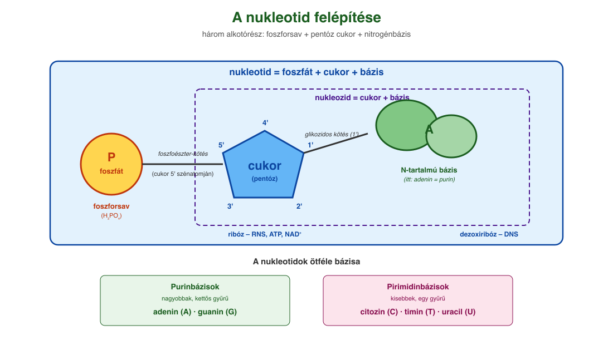
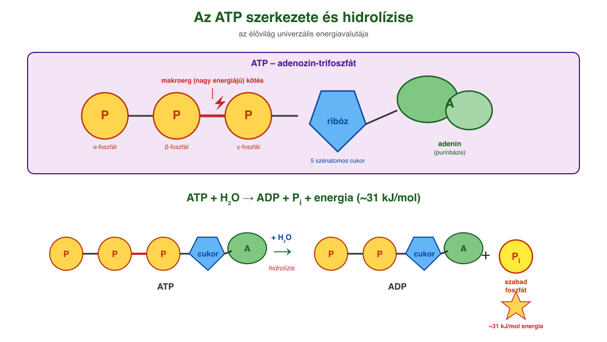
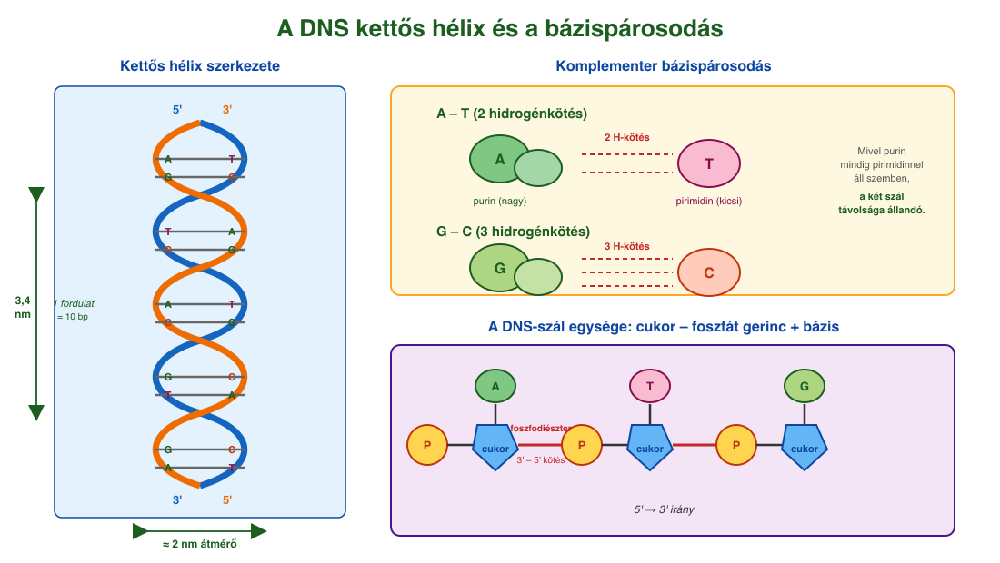

11. Nukleotidok¶
Felépítés: három alkotórész¶
A nukleotidok három alapegységből felépülő szerves molekulák. Három alkotórészük:
- Foszforsav (H₃PO₄) – egy vagy több foszfátcsoport.
- Öt szénatomos monoszacharid (pentóz): ribóz (C₅H₁₀O₅) vagy dezoxiribóz (C₅H₁₀O₄). A dezoxiribóz a 2' szénatomján OH helyett csak H-t tartalmaz.
- Nitrogéntartalmú szerves bázis, amely lehet:
- Purinbázis (nagyobb, kettős gyűrű): adenin (A), guanin (G).
- Pirimidinbázis (kisebb, egyszeres gyűrű): citozin (C), timin (T), uracil (U).
A bázis és a cukor glikozidos kötéssel (kondenzációval, víz kilépése közben) kapcsolódik – ez a nukleozid. A nukleozid cukoregységének 5' szénatomjához egy foszforsav-maradék kondenzál foszfoészter-kötéssel – így keletkezik a nukleotid (nukleozid-monofoszfát).
A bázis gyűrűatomjait számokkal (1, 2, 3...), a cukoregység szénatomjait pedig vesszős számokkal (1', 2', 3', 4', 5') jelöljük, hogy elkülönítsük őket. A DNS-ben a 2' szénatomon H áll, az RNS-ben OH.
Egyszerű nukleotidok – koenzimek¶
Egy vagy két nukleotidegységből (foszforsav, 5 szénatomos cukor, nitrogéntartalmú bázis) és egyéb csoportokból felépülő molekulák a nukleotidok. Általában koenzimek, az enzimek működéséhez szükséges nem kovalensen kapcsolódó molekulák. Képviselőik: ATP, NAD⁺, NADP⁺, koenzim-A.
ATP (adenozin-trifoszfát)¶
Az élővilág univerzális energiavalutája. Felépítése: adenin + ribóz + három, sorba kapcsolódó foszfátcsoport. Az egymást követő foszfátok között foszfoanhidrid-kötés, ún. makroerg (nagy energiájú) kötés található. Az ATP-t fotoszintézis, a biológiai oxidáció és az erjedés állítja elő.
Az ATP közvetlen energiaforrás az endoterm reakciókhoz:
- ATP + H₂O → ADP + foszfát (ΔG ≈ −31 kJ/mol)
- ATP + H₂O → AMP + PPᵢ (ΔG ≈ −38 kJ/mol)
Az ATP-aktiváció mechanizmusa: az ATP terminális foszfátcsoportja átkerül egy enzim segítségével az egyik reagensre → nagy energiatartalmú köztitermék keletkezik → ez már a másik kiindulási anyaggal energetikailag kedvezően reagál. Példa: glutaminsav + NH₃ → glutamin (önmagában endoterm, de ATP-aktivációval kedvezővé válik).
NAD⁺ és NADP⁺ (nikotinsavamid-adenin-dinukleotid, illetve foszfát)¶
Két nukleotidegységből álló molekulák, amelyek két foszfátcsoportnál kapcsolódnak össze. Egyik bázisuk az adenin, a másik a nikotinsavamid (B₃-vitaminból). A NADP⁺ abban különbözik a NAD⁺-tól, hogy a ribóz 2' szénatomjához egy plusz foszfátcsoport kapcsolódik.
Funkciójuk: hidrogén- és elektronátvivő koenzimek.
- A szerves vegyületek oxidációja során leadott 2 elektron + 1 H⁺ felvételére (redukcióra) alkalmasak: NAD⁺ + 2H⁺ + 2e⁻ ⇌ NADH + H⁺.
- A NAD⁺ főleg oxidálószerként szükséges a sejtnek, ezért sok NAD⁺ és kevés NADH kell hogy legyen a sejtben.
- A NADP⁺ ezzel szemben redukálószerként szükséges az enzimeknek, ezért sok NADPH és kevés NADP⁺ kell hogy legyen a sejtben. Példa a NADPH felhasználására állati szervezetben: a koleszterin képződése.
Koenzim-A (koA)¶
A koenzim-A a biokémiai folyamatokhoz két szénatomos „építőköveket”, acetilcsoportokat szállít. A molekula egy adenintartalmú nukleotidból és ennek terminális foszfátcsoportjához kapcsolódó szerves molekularészből (pantoténsav-származék) felépülő egyszerű nukleotid. A molekula végén található szulfhidrilcsoporthoz (–SH) kondenzációval kapcsolódik az acetilcsoport. A koenzim-A a cukrok lebontásához és a zsírsavak felépítéséhez és lebontásához szükséges. Az acetilcsoport és a kénatom közötti kötés nagy energiájú, felbomlása energetikailag kedvező.
Nukleinsavak¶
A nukleinsavakban a nukleotidegységek (nukleozid-monofoszfátok) foszfátcsoportjaikon keresztül kapcsolódnak egymáshoz. Egy nukleotid foszfátcsoportja egy másik ribóz vagy dezoxiribóz 3' szénatomjához kapcsolódik foszfodiészter-kötéssel.
DNS (dezoxiribonukleinsav)¶
- Cukoregység: dezoxiribóz.
- Bázisok: A, T, G, C (uracil nincs).
- A láncgerincet a cukor- és foszfátegységek adják (egyforma), a változó részt a hozzájuk kapcsolódó négy különböző bázis. A bázisok sorrendje hordozza a genetikai információt.
- Kettős hélix: a DNS-szálat egy vele ellentétes lefutású szál kíséri, ezek egymás körül felcsavarodva kettős hélixet alkotnak. A két szál egymás komplementere (kiegészítője): csak bizonyos bázispárok között tudnak hidrogénkötések kialakulni. Az adeninnel szemben timin, a guaninnal szemben citozin található a hélixben. Mivel a purin bázissal szemben mindig pirimidin bázis helyezkedik el, a két szál távolsága állandó.
- A két szálat a bázisok között kialakuló hidrogénkötések kapcsolják egymáshoz. A hélix jobbmenetes, 2 nm átmérőjű. Egy fordulat 3,4 nm hosszúságú és 10 bázispár alkotja (egy bázispár 0,34 nm hosszúságú).
- 5'- és 3'-vég: egy szál esetében a 3' szénatomhoz tartozó szabad hidroxilcsoporttal rendelkező véget 3'-végnek, a szabad foszfátcsoporttal rendelkező véget pedig 5'-végnek nevezzük.
RNS (ribonukleinsav)¶
- Cukoregység: ribóz (a 2' szénen OH).
- Bázisok: A, U, G, C (timin helyett uracil).
Ábrák¶

A nukleotid három alkotórésze: foszforsav (sárga), pentóz cukor (kék – ribóz vagy dezoxiribóz) és nitrogéntartalmú bázis (zöld – itt adenin). A cukor 1' szénatomján glikozidos kötéssel a bázis, az 5' szénatomján foszfoészter-kötéssel a foszfát kapcsolódik. A nukleozid csak a cukorból és a bázisból áll, a nukleotid ehhez kapcsolja a foszfátot. A vesszős számozás (1'–5') a cukoré, a sima számozás (1–9) a bázisé.

Az ATP felépítése: adenin (zöld) + ribóz (kék) + három foszfátcsoport (P-P-P, sárga). A foszfátok között foszfoanhidrid-kötések vannak; a két utolsó kötés makroerg (nagy energiájú), villámmal jelölve. Hidrolíziskor (ATP + H₂O) az utolsó foszfát leszakad, ADP és szabad foszfát keletkezik, és kb. 31 kJ/mol energia szabadul fel, ami az endoterm sejtfolyamatokat hajtja.

A DNS kettős spirál szerkezete. A két szál egymással ellentétes lefutású: az egyik 5' → 3', a másik 3' → 5' irányú; a láncgerincet a cukor (kék) – foszfát (sárga) egységek adják. A két szál között hidrogénkötések kapcsolják össze a komplementer bázispárokat: adeninnel szemben mindig timin, guaninnal szemben mindig citozin található. Mivel purin (A, G) mindig pirimidinnel (T, C) áll szemben, a szálak távolsága állandó, ≈ 2 nm. Egy teljes fordulat 3,4 nm hosszú és 10 bázispárt tartalmaz.
Az anyag az 1. tankönyv 66, 67, 68, 69. oldalain található.